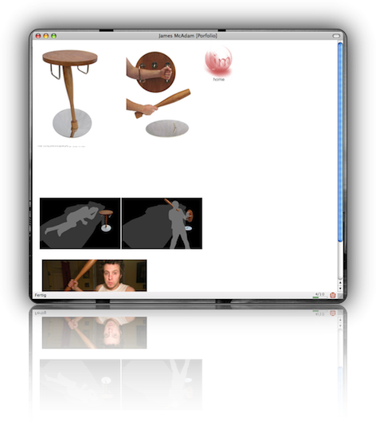

Safe Beside Table – Der wehrhafte Nachttisch
Als latent paranoider Großstädter macht man sich durchschnittlich einmal pro Woche Gedanken darüber, wie man sich am besten im Falle eines nächtlichen Einbruchs verhält. Entgegen dem gesunden Menschenverstand und wider dem Wissen um Deeskalation malt man sich dann aus, wie man den ungebetenen Besucher unter Zuhilfenahme körperlicher Gewalt aus seinen vier Wänden vertreibt.
(Das ist zwar schwer bescheuert, aber als reiner Unterhaltungsblogger ist es nicht meine Aufgabe über adäquate Strategien im Falle eines Einbruchs zu referieren.)
Also, weiter gehts: Am besten ist es natürlich, wenn man noch eine Waffe zur Hand hat. Allerdings sollte diese legal sein und den Einbrecher nicht tödlich verletzen. Somit scheiden Schuss- und Stichwaffen schon mal aus. Auch von asiatischen "Martial Arts"-Freakwaffen rate ich ab, da man sich damit im Zweifelsfalle eher selbst verletzt.
Bleibt also der gute alte Knüppel. Eine Waffe, so archaisch wie der Drang, sein Heim bis aufs Blut verteidigen zu müsssen. Wohin allerdings mit dem guten Stück, wenn er mal nicht in Gebrauch ist und auf Kriminelle "herniederregnet"? Im Schrank ist er zwar gut aufgehoben, aber nicht wirklich griffbereit. Direkt beim Bett sollte er also gelagert werden, entweder in einer speziellen Vorrichtung (wirkt mitunter befremdlich auf Besuch; nicht jeder gesteht sich den Urinstinkt, seine Höhle verteidigen zu müssen ein), oder légère daneben gelegt (man kann des nächtens leicht darüber stolpern und sich verletzen).
Wie man sieht, ist das alles nicht ideal. Eine bessere Lösung muss her, und die kommt von James McAdam aus Großbrittanien - Der "Safe Beside Table". Ein schmucker rustikaler Nachttisch, dessen Bein im Notfall den Knüppel hergibt, und dessen Tischplatte gleichzeitig als Schild dient.

Wer also in einer harten Gegend lebt und sich nicht auf korrupte Cops verlassen möchte, dürfte mit diesem Prunkstück britischer Mobiliarkunst gut beraten sein.
(via)


Keine Kommentare zu "Safe Beside Table – Der wehrhafte Nachttisch"
- Externe Links im selben Fenster öffnen
- Externe Links in neuem Fenster öffnen
Red Baron
Dieses Ding brauch ich ganz dringend in der Oststadt.. Bin schon am packen, bald gehts los!
magnus
Kommt mir vor,als sie dies das Mobilar von Inspektor Clouseau... Das richtige Instrument um seinen Diener Cato abzuwehren.
Herschel Rubinstein
@red baron: für die oststadt kann ich das nur empfehlen, nicht umsonst nennt man diesen stadtteil auch "klein-laatzen".
@magnus: für pflichtbewusste diener ist das ja eigentlich nicht gedacht…
NIls
hmmm. wenns um einbruch geht, mich fragen. zumindest was den gemeinen haus-safe angeht, kann ich da weiterhelfen:
http://www.totse.com/en/bad_ideas/locks_and_security/opensafe.html
http://linktipidea.com/how-to-crack-a-safe/
http://home.howstuffworks.com/safecracking.htm
Vor allem die erste seite scheint voller erfahrungsberichte zu sein. falls man mal seinen "safe" zu "hause" knacken möchte.
Herschel Rubinstein
danke, ich packe sehr oft die schlüssel für meinen aston über nacht in den safe. leider vergesse ich im schlaf manchmal den code. diesen habe ich mir sicherheitshalber zwar aufgeschrieben und im westflügel meines palais' deponiert, aber den zu holen dauert hin und zurück locker eine halbe stunde. zeit, die ich nicht habe, wenn ich dringend in den country-club muss, um zu entspannen, cocktails zu schlürfen und eine runde zu golfen.
du wirst jetzt vielleicht einwenden, dass ich stattdessen doch den porsche, den ferrari, den mustang, den veyron oder den maserati nehmen könnte - aber ich bin gewohnheitstier. im countryclub fahre ich mit dem aston vor seit ich 15 bin, und meine eltern ihn mir zu ostern "versteckt haben".
ach ja, nie mehr als zwei links pro kommentar, sonst hält wordpress dich für einen spammer